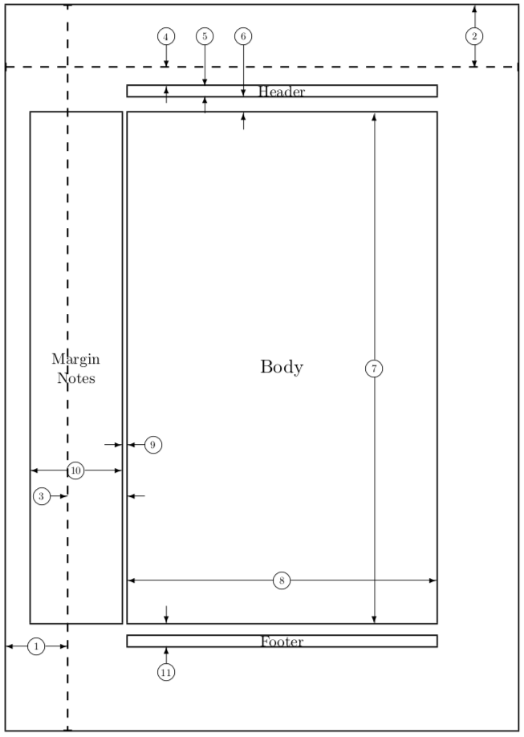
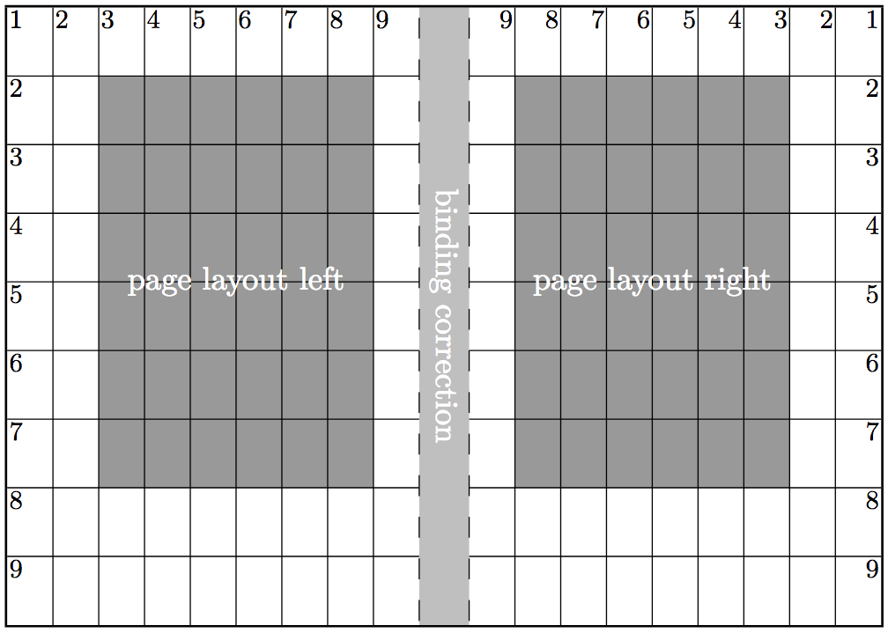

Personalización de un documento en LaTeX
Veremos a continuación diversos modos de personalizar un documento en LaTeX para adaptarlo a nuestras necesidades. Cubriremos los siguientes aspectos:
- Creación de comandos y entornos propios
- Diseño de página: cambiar tamaño de página y márgenes. Los paquetes
geometryytypearea - Diseño de cabecera y pie de página: los paquetes
fancyhdryscrlayer-scrpage - Personalización de capítulos y secciones: los paquetes
titlesecyfancychap - Selección de una tipografía: The LaTeX font Catalogue. Uso de las fuentes del sistema: XeLaTeX. Fuentes de iconos con el paquete
fontawesome.
Creación de órdenes y entornos propios
LaTeX posee multitud de órdenes para cada una de las tareas necesarias en la edición de textos. Sin embargo, es a veces útil definir nuestras propias órdenes o entornos para agilizar la edición de un documento.
Nuevas órdenes: la orden \newcommand
Veamos en primer un ejemplo sencillo. Para escribir en matemáticas el conjunto de los números reales usamos el comando $\mathbb{R}$. Si estamos editando un documento y tenemos que incluir muchas veces dicho conjunto de números es más conveniente definir un comando más corto para ello. Así, si escribimos en el preámbulo de nuestro documento la siguiente línea:
\newcommand{\R}{\mathbb{R}}entonces tendremos a nuestra disposición la nueva orden \R para el conjunto de los números reales.
La sintaxis para definir un comando nuevo en LaTeX es la siguiente:
\newcommand{\nuevocomando}[n]{definición}donde [n] es un parámetro opcional que indica el número n de argumentos que va a tener el nuevo comando. Si no se especifica nada el comando creado no tendrá argumentos (como en el ejemplo anterior \R). En el siguiente ejemplo se crea un comando que aceptará exactamente dos parámetros
\newcommand[2]{\parcial}{\frac{\partial #1}{\partial #2}}nos permite escribir \parcial{f}{x} e imprimirá la derivada parcial de la función f con respecto a la variable x. Observemos que los identificadores #1 y #2 se sustituyen en la definición del comando por el primer y segundo argumento proporcionado.
La única precaución que tenemos que tener es que el comando que estamos definiendo no puede existir, en cuyo caso LaTeX nos dará un error. Si lo que queremos es realmente cambiar un comando ya existente deberemos usar la orden \renewcommand cuya sintaxis es idéntica a \newcommand.
Entornos: la orden \newenvironment
Para definir un entorno nuevo usaremos la orden \newenvironment cuya sintaxis es la siguiente:
\newenvironment{nombre}[n]{inicio}{fin}donde [n] es un parámetro opcional que indica el número n de argumentos que va a aceptar el entorno. Una vez definido lo usaremos de la forma habitual:
\begin{nombre}
Texto
\end{nombre}Al igual que ocurría con la definición de un comando, la única precaución que tenemos que tener es que el entorno que estamos definiendo no puede existir, en cuyo caso LaTeX nos dará un error. Si lo que queremos es realmente cambiar un entorno ya existente deberemos usar la orden \renewenvironment cuya sintaxis es idéntica a \newenvironment.
TODO: hablar del espacio en los entornos con (ver lshort).
En el archivo comandosyentornos.tex podemos ver varios ejemplos diferentes del uso de estos dos tipos de órdenes.
Diseño de página
Al inicio de cualquier documento en LaTeX se ha de indicar el tipo (o la clase) del mismo mediante la orden \documentclass (ver la sección Tipos de documento para más información). Cada tipo de documento define sus propios márgenes (superior, inferior y laterales), suele reservar un área para las notas al margen y suele fijar, normalmente mediante una opción indicada en el comando \documentclass, el tamaño de papel en el que se imprimirá el documento. En la siguiente imagen podemos ver dibujadas las diferentes secciones en las que es dividida una página

Para mostrar dicho esquema basta cargar el paquete showframe. LaTeX permite cambiar las medidas de cada uno de dichos elementos pero no es aconsejable aventurarse a ello salvo que sepamos algo sobre las reglas de maquetación de página.
Para personalizar nuestro documento, en lugar de cambiar manualmente la anchura de los márgenes, texto, altura de la cabecera, etc, cargaremos un paquete específico para ello. Los dos paquetes más habituales son los siguientes:
geometry: permite modificar los márgenes de un documento de forma muy sencilla. Por ejemplo, supongamos que tenemos que crear un documento con las siguientes especificaciones: el tamaño del papel será un a4. El texto debe tener 16.5cm de anchura por 22cm de altura. El margen superior debe ser de 3cm y el margen izquierdo 2.3cm. El pie de página debe situarse bajo el área reservada para el texto. Para conseguir dicho documento basta escribir:
\documentclass[a4paper]{article}
\usepackage[total={16.5cm, 22cm},
top=3cm, left=2.3cm, includefoot]{geometry}donde por supuesto podemos cambiar article por la clase de documento que deseemos. Esto le da al usuario mucho control sobre el diseño de página, pero también mucha responsabilidad pues deberá saber elegir bien los valores para que el diseño de página sea armonioso.
typearea: El paquetetypeareaaborda el problema de forma distinta: le proporciona al usuario diversos moddos de ajustar el diseño y algoritmos basados en prácticas tipográficas estándar se encargan de recalcular los elementos de la página de forma correcta. En la sección 2.1 del manual de KOMA-Script (página 29) se encuentra una descripción más detallada de cómo funciona este proceso.
El paquete typearea
Para usar correctamente este paquete hay que entender los factores que afectan al diseño de una página: - el tamaño, anchura y tipo de la fuente usada. - el espacio entre líneas - la longitud de las palabras - el espacio disponible El primero de estos factores nos indica que la elección de la fuente que se usará en el documento es determinante a la hora de diseñar la página. Por dicho motivo el paquete typearea se cargará después de haber seleccionado la fuente del documento y modificado (si se cree conveniente) la separación entre líneas (p.e. con el paquete setspace). Dicho paquete tiene dos opciones importantes: - BCOR (Binding corrections): corrección al encuadernado. Longitud (generalmente en mm) que corresponde a la anchura del lomo del libro que será necesaria para el encolado o cosido en el proceso de encuadernación. - DIV (divisions): número natural que indica el número de columnas en las que internamente se dividirá la página para ayudar a la hora de situar todos los elementos. Cuando mayo sea dicho número generalmente aumentará el ancho del texto.

Por ejemplo:
\usepackage{bookman}
\linespread{1.25}
\usepackage[BCOR=5mm, DIV=9]{typearea} Además DIV permite también varios valores especiales (ver tabla 2.3 en el manual de KOMA-Script): - default: recalcula el diseño de página con los parámetros por defecto. - classic: recalcula el diseño de página usando el canon de diseño medieval. - calc: recalcula el diseño de página. Útil para usarlo tras cambiar el tamaño de la fuente o el espaciado de líneas. - last: recalcula el diseño de página usando la opción DIV que se usó la última vez. Útil si estamos usando el paquete typearea junto con una clase del paquete KOMA-Script (ver ejemplo más abajo)
Si usamos una clase del paquete KOMA-Script no es necessario cargar el paquete typearea puesto que la clase de documento se encargará de ello. De hecho las opciones DIV y BCOR deberemos indicarlas en el bloque \KOMAoptions{}. Puesto que la elección de fuente se suele hacer a posteriori deberemos indicarle al paquete typearea que recalcule el diseño de página usando la opción last. Un ejemplo concreto sería el siguiente:
\documentclass{scrartcl}
\KOMAoptions{
fontsize=10pt
,DIV=9
}
\usepackage{bookman}
\linespread{1.25}
\usepackage[BCOR=5mm, DIV=classic]{typearea} % <factor>, calc, classic
\KOMAoptions{DIV=last} % Alternativamente usar \recalctypeareaMárgenes amplios con el paquete typearea
Una situación interesante es diseñar una página con espacio para notas al margen (que podemos incluir con el comando \marginpar aunque es mejor usar el paquete sidenote). Para ello debemos ampliar la anchura de dicha sección de la página. Para ello usaremos, por ejemplo,
\setlength{\marginparwidth}{2\marginparwidth}para duplicar la anchura de dicha área (podemos especificar en el segundo argumento cualquier longitud absoluta que queremos, p.e. 3cm)
Esto deberemos hacerlo tras recalcular el diseño de página pues de lo contrario no será efectivo. Además, para que el cambio sea coherente con el diseño de página deberemos indicar la opción mpinclude en KOMAoptions para que el paquete typearea considere al margen como parte del texto (ya que vamos a usarlo para tal fin incluyendo notas al margen). Un ejemplo completo sería el siguiente:
\documentclass{scrartcl}
\KOMAoptions{
fontsize=10pt
,mpinclude
,DIV=9
}
\usepackage{bookman}
\linespread{1.25}
\usepackage[BCOR=5mm, DIV=classic]{typearea} % <factor>, calc, classic
\KOMAoptions{DIV=last} % Alternativamente usar \recalctypearea
\setlength{\marginparwidth}{2\marginparwidth}Personalización de los elementos de página en las clases del paquete KOMA-Script
Cada uno de los elementos de un documento: título, nombre del autor, secciones y capítulos, fecha, dedicatoria, citas, pies de página,… tienen un tamaño, tipo de fuente, estilo y color predefinido pero pueden cambiarse a voluntad. Para ello las clases del paquete KOMA-Script proporcionan dos comandos \setkomafont y \addtokomafont que permiten cambiar dicho estilo. En la documentación del paquete (ver pp. 60–63) podemos encontrar una lista completa de todos los elementos susceptibles de ser cambiados. Destacaremos aquí los más habituales:
dispositiontodos las secciones de estructura del docuemnto: desde\parthasta\minisecincluyendo el título del entornoabstracttitleformato para el título (comando\title)authorformato para el nombre del autor (comando\author)titleheadformato para la cabecera sobre el título (comando\titlehead)subjectformato para el tema del documento (comando\subject)dateformato para la fecha (comando\date)partformato para las partes del documento (comando\part)chapterformato para los capítulos (comando\chapter)chapterprefixformato para el texto “Capítulo” que suele anteponerse al nombre del capítulosectionformato para las secciones (comando\section)subsectionformato para las subseciones (comando\subsection)minisecformato para las minisecciones (comando\minisec)dictumformato para las citas (comando\dictum)captionformato para el título de una figura o tabla (comando\caption)captionlabelformato para la etiqueta del título de una figura o tabla (comando\caption)footnoteformato para las notas al pie de página (comando\footnote)pagennumberformato para los números de página (comando\footnote)
El uso de los comandos \setkomafont y \addtokomafont es el siguiente:
\setkomafont{elemento}{valor}donde elemento es uno de la lista anterior y valor es el estilo que queremos aplicar. Entre los valores más habituales están los siguientes:
\rmfamily(roman font),\sffamily(sans-serif font),\ttfamily(monospace font) para el tipo de letra.\upshape(recta),\itshape(itálica),\slshape(inclinada),\scshape(versalitas) para el estilo\mdseries(normal),\bfseries(negrita), para el grosor y\Huge,\huge,\LARGE,\Large,\large,\normalsize,\small,\footnotesize,\scriptsize,\tinypara el tamaño.
Además, al redefinir un estilo podemos usar como valor\usefontofkomafont{elemento} o bien \usesizeofkomafont{elemento} y copiaremos la tipografía o el tamaño del elemento deseado.